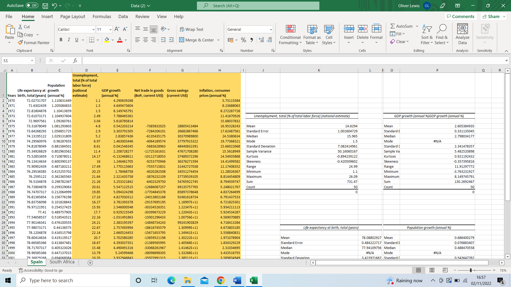
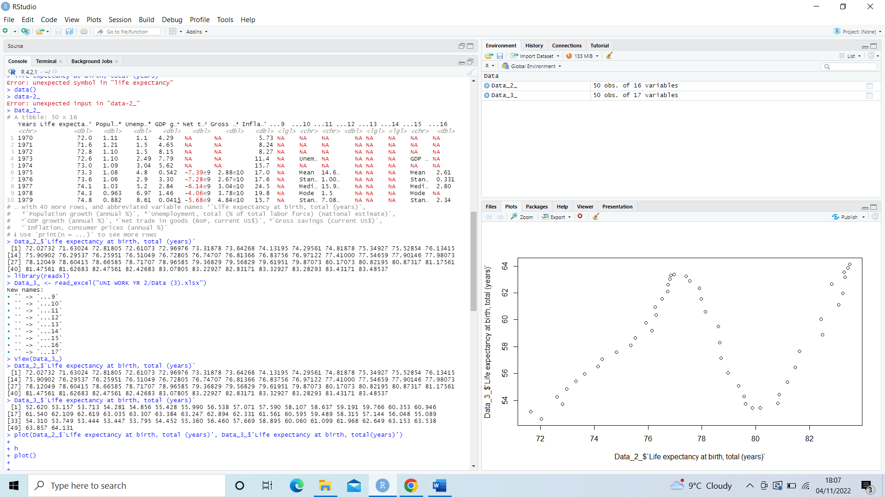

At a glance
The surviving case-study draft, spreadsheets, R code and screenshots document the question and initial visualisations. They do not contain a complete final finding.

An early RStudio exercise comparing long-run social and economic data for Spain and South Africa.
The surviving case-study draft, spreadsheets, R code and screenshots document the question and initial visualisations. They do not contain a complete final finding.
This is a university concept and portfolio study. The page documents the designs and research that survive, rather than presenting a launched product.
Our case-study draft set out to explore the cost-of-living context in Spain and South Africa using historical data. We were interested in relationships among population, GDP growth, inflation, savings, birth rate and life expectancy, and how those measures might change across several decades.

The two spreadsheets brought together comparable columns for the countries. The working notes proposed using RStudio to turn that data into plots that would be easier to inspect than rows of figures. The research question was broad, and the surviving draft stops before a supported conclusion about what caused any changes.

The screenshots show my first visualisation attempts using readxl to load the spreadsheets and ggplot2 to draw relationships from the data. I experimented with individual country plots and a comparison, learning how column names, mappings and plot types affected the result.
This is a record of the analysis process and tools rather than evidence for a claim about either country. It shows the beginning of working with real tabular data, cleaning up a research question and learning to communicate patterns visually.